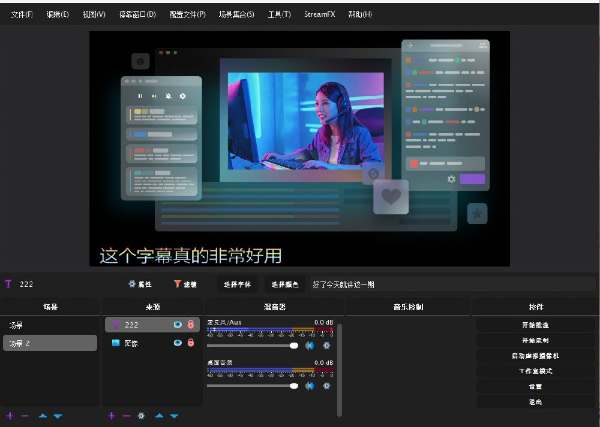
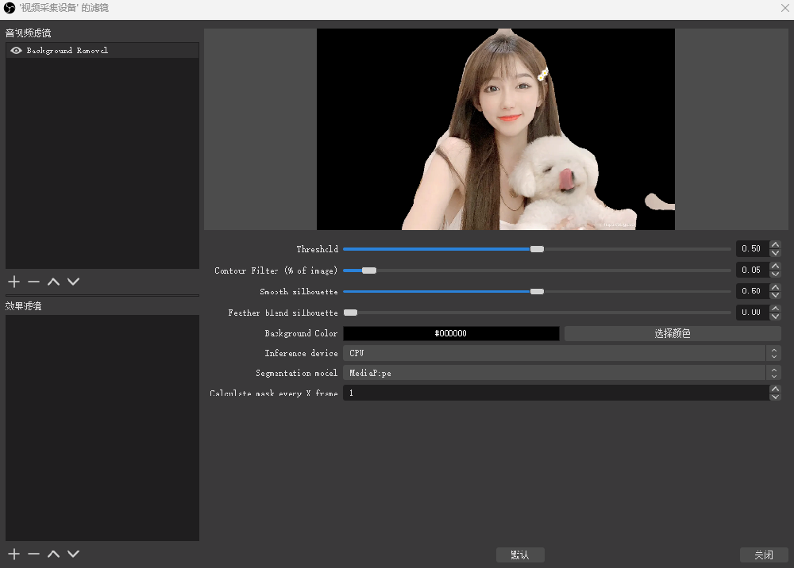
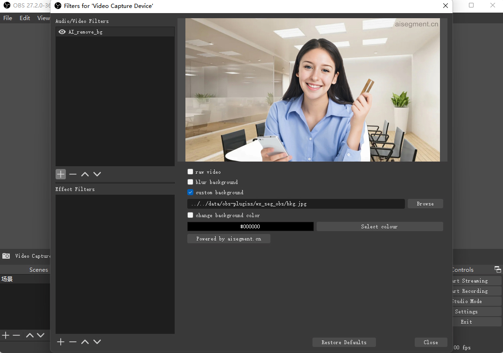
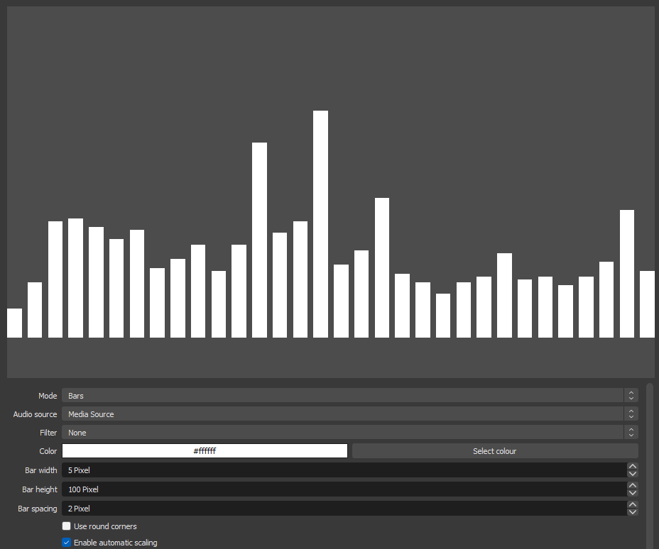
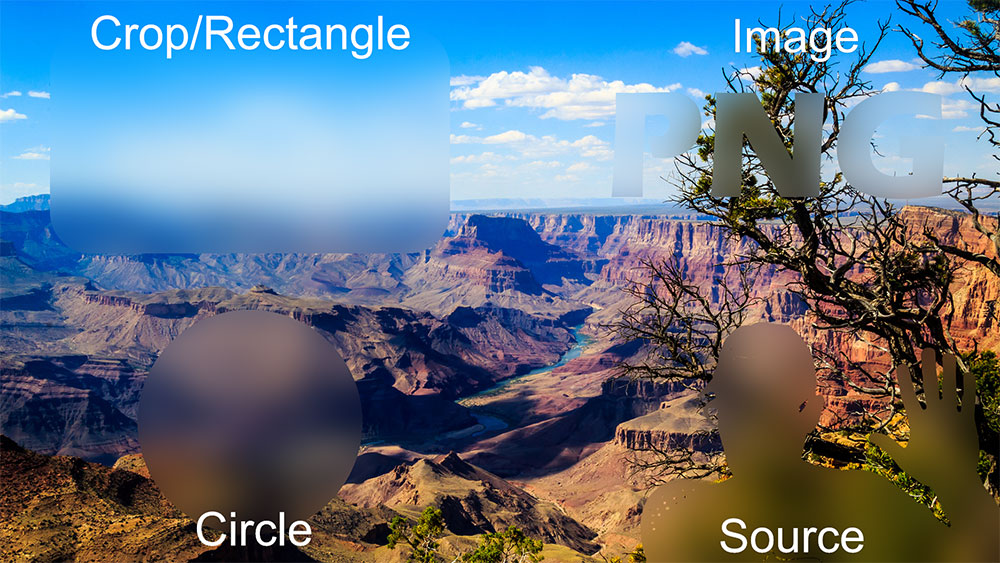
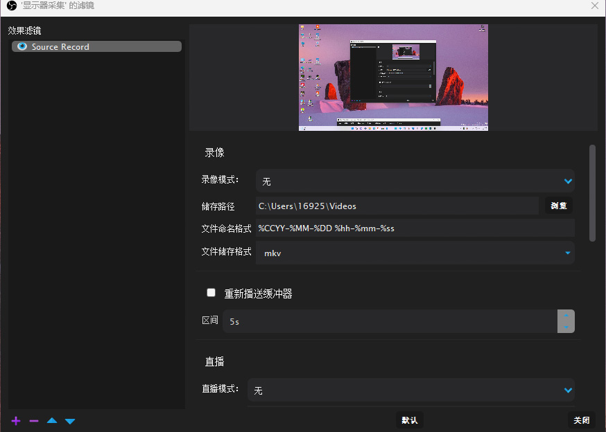
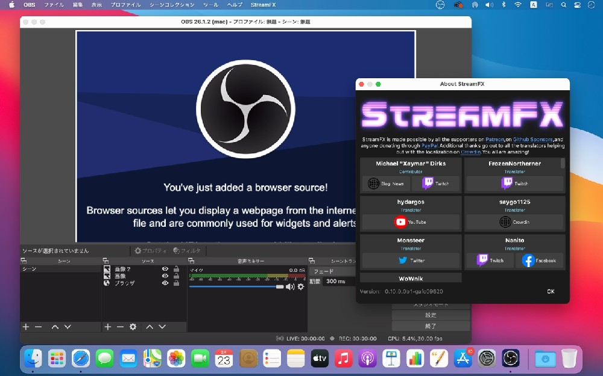
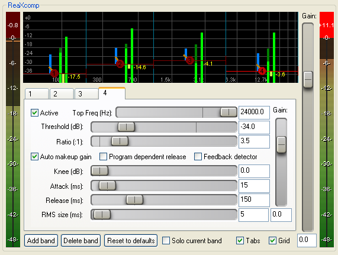

背景扣除人像分割模糊obs-backgroundremoval
此插件可以轻松替换肖像图像和视频中的背景，以创建虚拟绿屏。它使用神经网络来预测肖像的蒙版并删除背景像素。它不需要GPU，可以在所有操作系统中使用！...
立即下载 摄像头推荐 视频教程 
Virtual Background By AISegment 1.0 AI背景扣除模糊替换
该插件可以通过我们的AI算法模糊和替换纵向视频中的背景。它不需要GPU，在普通计算机中以25FPS运行。它在准确性方面取得了最佳效果...
立即下载 摄像头推荐 视频教程 
音频缩放效果滤镜Scale To Sound 1.2.1
此插件添加了一个名为"缩放到声音"的过滤器，该过滤器根据您选择的任何音频源的音频电平进行源缩放。有一些属性，因此您可以微调它的行为方式 ...
立即下载 


obs-StreamFX(OBS推流优化插件)
StreamFX是OBS Studio上的一款推流优化插件，它增加了新的信号源、滤镜和转场，让其大幅改善你的流媒体和录音设置，增强OBS Studio上的推流效果...
立即下载 

Valhalla VintageVerb 混响效果器
想要下载我们的免费插件？只需向下滚动到页面底部即可。单击带下划线的Mac或Windows链接以下载安装程序，在系统上运行安装程序，然后您就可以开始了！...
立即下载